library(tidyverse)
library(feedr)
library(gt)
d <- read_csv("Data/Datasets/logger_clean.csv")
m <- read_csv("Data/Datasets/meta_clean.csv")
d <- left_join(d, select(m, animal_id, sex, egg_date, hatch_date, fledge_date), by = "animal_id") |>
mutate(eggs = date >= egg_date & date <= hatch_date,
hatchlings = date >= hatch_date & date <= fledge_date,
fledglings = date >= fledge_date)Initial data extraction
In this script we’ll summarize our data into visits and bouts of presence. We’ll save these data for analysis and take a look at the patterns to make sure we have a good idea of what’s going on.
Setup
First load the data etc.
Visits
Visits are defined as a single ‘visit’ to the logger. In this case this will generally reflect the individual entering or exiting the nest box.
First we need to get an idea of how many seconds are typically between reads. This can be defined by the user when setting up the logger, but we can also check the data to see what seems most reasonable.
bw <- d |>
group_by(logger_id) |>
mutate(diff = as.numeric(difftime(lead(time), time, units = "secs")))
summary(bw$diff) Min. 1st Qu. Median Mean 3rd Qu. Max. NA's
0.0 8.0 22.0 175.4 123.0 79453.0 23 ggplot(data = filter(bw, diff < 25), aes(x = diff)) +
geom_histogram(binwidth = 1) +
facet_wrap(~logger_id, scales = "free") +
labs(title = "Histograms of the time in seconds between logger reads in the data")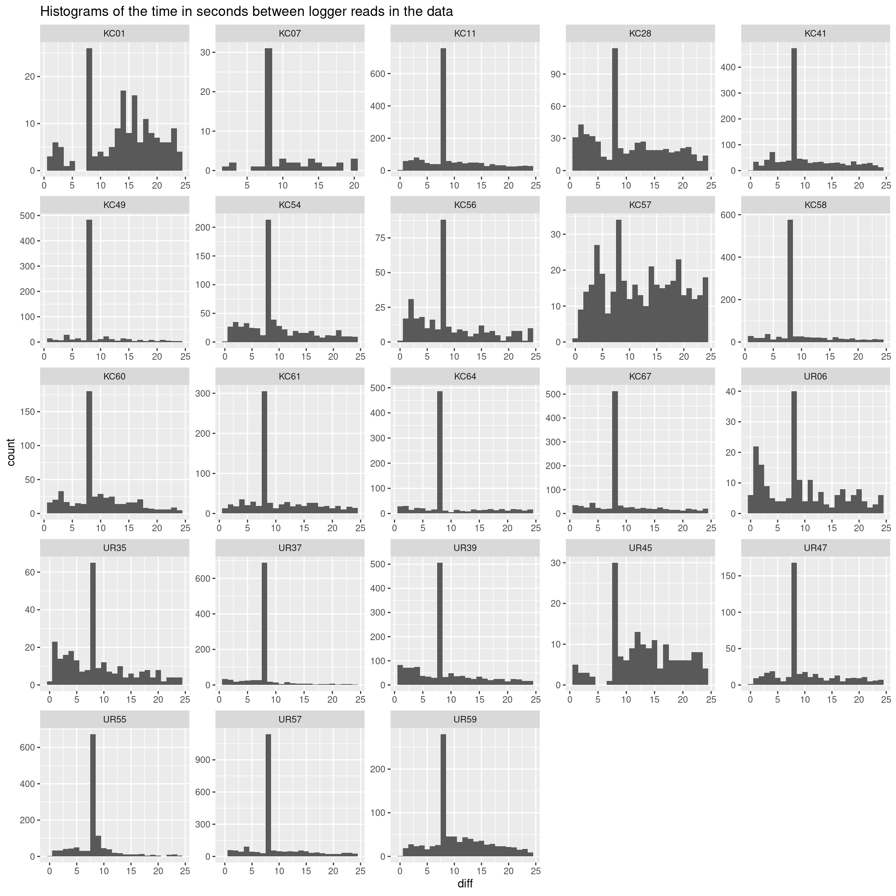
KC57 is a bit odd, but generally it looks like about 8 seconds between reads, so let’s use a bw cutoff of 9.
This means that if a bird were to sit in the nest box opening, we would generally expect to get a read every 8 seconds. So reads greater than 9 seconds apart will be considered belonging to two separate visits.
Let’s collapse the reads into visits, and also add a measure of how long each visit was (length in seconds, how long they were recorded by the reader i.e. sat in the nest box opening, for example) as well as the time until the next visit (time2next in minutes).
v <- visits(d, bw = 9) |>
group_by(animal_id, logger_id) |>
mutate(length = as.numeric(difftime(end, start, units = "secs")), # Seconds
time2next = as.numeric(difftime(lead(start), end, units = "mins"))) |> # Minutes
relocate(length, time2next, .before = "animal_n")Just to double check, were there any movements between feeders?
Nope!
move(v)# A tibble: 0 × 1
# ℹ 1 variable: animal_id <fct>Now we’ll summarize the visits by date, hour, logger id, and bird id.
Remember that length is in seconds, and time2next is in minutes.
vs_hr <- v |>
mutate(hour = hour(start)) |>
group_by(animal_id, logger_id, date, hour, sex) |>
summarize(start_visits = min(start), end_visits = max(end),
visits_n = n(),
min_len = min(length), max_len = max(length), mean_len = mean(length),
median_len = median(length),
min_t2next = min(time2next, na.rm = TRUE), max_next = max(time2next, na.rm = TRUE),
mean_t2next = mean(time2next, na.rm = TRUE),
median_t2next = median(time2next, na.rm = TRUE), .groups = "drop")slice(vs_hr, 20) |>
gt()| animal_id | logger_id | date | hour | sex | start_visits | end_visits | visits_n | min_len | max_len | mean_len | median_len | min_t2next | max_next | mean_t2next | median_t2next |
|---|---|---|---|---|---|---|---|---|---|---|---|---|---|---|---|
| 011016B3D3 | KC56 | 2023-05-23 | 15 | M | 2023-05-23 15:01:49 | 2023-05-23 15:48:47 | 8 | 0 | 0 | 0 | 0 | 0.25 | 27.66667 | 9.329167 | 8.558333 |
Now we’ll summarize the visits by date, logger id, and bird id.
Remember that length is in seconds, and time2next is in minutes.
vs <- v |>
group_by(animal_id, logger_id, date, sex) |>
summarize(start_visits = min(start), end_visits = max(end),
visits_n = n(),
min_len = min(length), max_len = max(length), mean_len = mean(length),
median_len = median(length),
min_t2next = min(time2next, na.rm = TRUE), max_next = max(time2next, na.rm = TRUE),
mean_t2next = mean(time2next, na.rm = TRUE),
median_t2next = median(time2next, na.rm = TRUE), .groups = "drop")
summary(vs$mean_t2next) Min. 1st Qu. Median Mean 3rd Qu. Max. NA's
1.925 5.432 7.648 20.652 11.193 1802.117 2 Generally the next visit is within 15 minutes.
slice(vs, 30) |>
gt()| animal_id | logger_id | date | sex | start_visits | end_visits | visits_n | min_len | max_len | mean_len | median_len | min_t2next | max_next | mean_t2next | median_t2next |
|---|---|---|---|---|---|---|---|---|---|---|---|---|---|---|
| 011016C73C | KC01 | 2023-05-22 | F | 2023-05-22 05:39:57 | 2023-05-22 20:39:19 | 237 | 0 | 8 | 0.05485232 | 0 | 0.1666667 | 548.8167 | 6.109564 | 2.783333 |
Presence
Using this information, let’s now summarize our data by presence. The presence() function collapses visits into bouts of time in which the individual was visiting the next box regularly. Here we’ll use a cut off of 15min to define a bout of presence.
p <- presence(v, bw = 15) |>
mutate(time2next = as.numeric(difftime(lead(start), end, units = "mins"))) |> # Minutes
relocate(length, time2next, .before = "logger_n")And as with visits we’ll summarize the presence bouts too.
ps_hr <- p |>
mutate(hour = hour(start)) |>
group_by(animal_id, logger_id, date, hour, sex) |>
summarize(start_presence = min(start), end_presence = max(end),
bouts_n = n(),
min_len = min(length), max_len = max(length), mean_len = mean(length),
median_len = median(length), total_length = sum(length),
min_t2next = min(time2next, na.rm = TRUE), max_next = max(time2next, na.rm = TRUE),
mean_t2next = mean(time2next, na.rm = TRUE),
median_t2next = median(time2next, na.rm = TRUE), .groups = "drop")Warning: There were 2 warnings in `summarize()`.
The first warning was:
ℹ In argument: `min_t2next = min(time2next, na.rm = TRUE)`.
ℹ In group 1401: `animal_id = 0700EDFE67`, `logger_id = UR55`, `date = 2023-05-27`, `hour = 14`,
`sex = "M"`.
Caused by warning in `min()`:
! no non-missing arguments to min; returning Inf
ℹ Run `dplyr::last_dplyr_warnings()` to see the 1 remaining warning.slice(ps_hr, 30) |>
gt()| animal_id | logger_id | date | hour | sex | start_presence | end_presence | bouts_n | min_len | max_len | mean_len | median_len | total_length | min_t2next | max_next | mean_t2next | median_t2next |
|---|---|---|---|---|---|---|---|---|---|---|---|---|---|---|---|---|
| 011016B3D3 | KC56 | 2023-05-24 | 13 | M | 2023-05-24 13:32:55 | 2023-05-24 13:46:31 | 1 | 13.6 | 13.6 | 13.6 | 13.6 | 13.6 | 24.96667 | 24.96667 | 24.96667 | 24.96667 |
And as with visits we’ll summarize the presence bouts too.
ps <- p |>
group_by(animal_id, logger_id, date, sex) |>
summarize(start_presence = min(start), end_presence = max(end),
bouts_n = n(),
min_len = min(length), max_len = max(length), mean_len = mean(length),
median_len = median(length), total_length = sum(length),
min_t2next = min(time2next, na.rm = TRUE), max_next = max(time2next, na.rm = TRUE),
mean_t2next = mean(time2next, na.rm = TRUE),
median_t2next = median(time2next, na.rm = TRUE), .groups = "drop")slice(ps, 30) |>
gt()| animal_id | logger_id | date | sex | start_presence | end_presence | bouts_n | min_len | max_len | mean_len | median_len | total_length | min_t2next | max_next | mean_t2next | median_t2next |
|---|---|---|---|---|---|---|---|---|---|---|---|---|---|---|---|
| 011016C73C | KC01 | 2023-05-22 | F | 2023-05-22 05:39:57 | 2023-05-22 20:39:19 | 2 | 128.2833 | 756.0333 | 442.1583 | 442.1583 | 884.3167 | 15.05 | 548.8167 | 281.9333 | 281.9333 |
Save the data
Looking below at KC07, it seems very likely that the nest failed before the experiment (or that something was wrong, at least). So we’ll omit those data before saving the summary.
v <- filter(v, logger_id != "KC07")
vs_hr <- filter(vs_hr, logger_id != "KC07")
vs <- filter(vs, logger_id != "KC07")
p <- filter(p, logger_id != "KC07")
ps_hr <- filter(ps_hr, logger_id != "KC07")
ps <- filter(ps, logger_id != "KC07")
write_csv(v, "Data/Datasets/visits.csv")
write_csv(vs_hr, "Data/Datasets/visits_summary_hour.csv")
write_csv(vs, "Data/Datasets/visits_summary.csv")
write_csv(p, "Data/Datasets/presence.csv")
write_csv(ps_hr, "Data/Datasets/presence_summary_hour.csv")
write_csv(ps, "Data/Datasets/presence_summary.csv")Data Columns
animal_id- Pit tag id for the birdlogger_id- Nest box with the loggerdate- Date of the readstart/end- Start/End time of the visit/presence bouthour- Hour of the start of the visit/presence boutstart_XXX/end_XXX- Start/End times of the first and last visit/presence bout of the day/hour (visit/presence).length- Duration in seconds of the visit/presence bouttime2next- Time in minutes to the next visit/presence boutvisits_n/bouts_n- Daily/Hourly number of visits/presence boutsanimal_n- Number of animals in the datalogger_n- Number of loggers in the datamin_XXX/max_XXX/median_XXX/mean_XXX- Daily/Hourly Min/Max/Median/Mean of the measure in question (len=length,t2next=time2next)sex- Sex of the animal_idegg_date- Date from the metadata of when eggs were laidhatch_date- Date from the metadata of when eggs were hatched (NA for nest failure)fledge_date- Date from the metadata of when hatchlings fledged (NA for nest failure)egg/hatchlings/fledglings- TRUE/FALSE of whether that date had eggs/hatchlings/fledglings (all arehatchlingsor NA for failed nest)
Visual exploration
In these figures, we’re looking at the summarized data of visits (points) and bouts of presence (the horizontal error bars).
In the corner of each date, we note what stage the nest was in (all are either hatchlings, or note that the nest failed at some point).
Code
for(i in sort(as.character(unique(p$logger_id)))) {
cat("###", i, "\n")
p1 <- filter(p, logger_id == i)
v1 <- filter(v, logger_id == i)
s1 <- select(p1, date, eggs, hatchlings, fledglings) |>
distinct() |>
group_by(date) |>
summarize(label = paste0(c("Eggs", "Hatchlings", "Fledglings", "(nest failed)")[c(isTRUE(eggs), isTRUE(hatchlings), isTRUE(fledglings), is.na(fledglings))], collapse = ", "))
l <- p1 |>
group_by(date) |>
summarize(min = unique(floor_date(start, unit = "day")),
max = unique(ceiling_date(end, unit = "day")) - seconds(1))
g <- ggplot(data = p1,
aes(xmin = start, xmax = end, y = animal_id, colour = sex)) +
theme_bw() +
geom_errorbar(width = 0.25) +
geom_point(data = v1, aes(x = start), size = 1) +
geom_text(data = s1, aes(x = as_datetime(date), y = +Inf, label = label),
inherit.aes = FALSE, hjust = 0.1, vjust = 1.1) +
facet_wrap(~date, scales = "free", ncol = 1) +
scale_x_datetime(date_breaks = "2 hours", date_labels = "%H:%M",
limits = \(x) c(floor_date(x[1], "day"), ceiling_date(x[2], "day"))) +
labs(x = "Time", y = "Bird ID")
print(g)
cat("\n\n")
}KC01
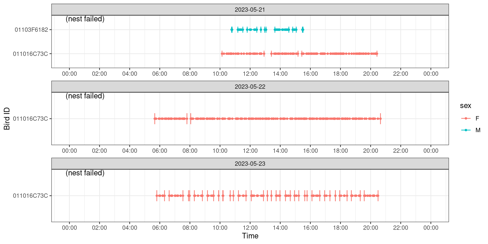
KC11
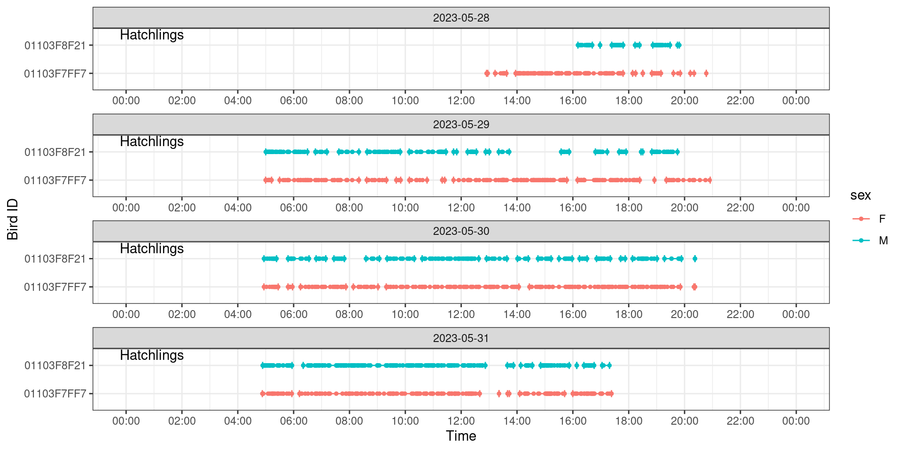
KC28
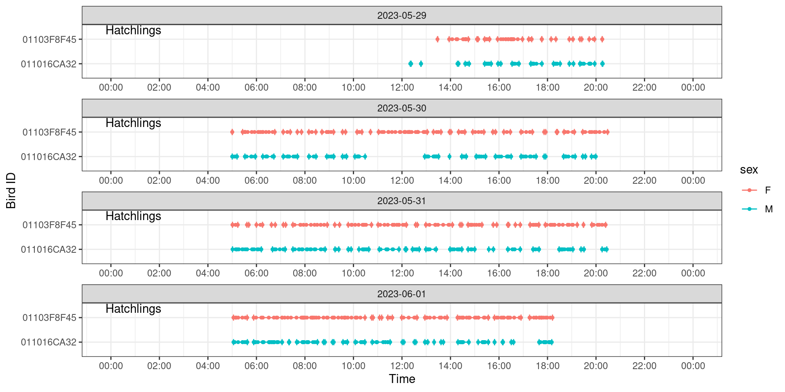
KC41
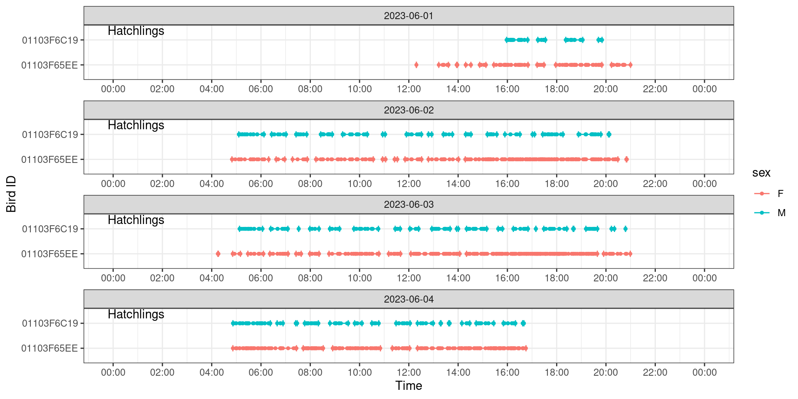
KC49
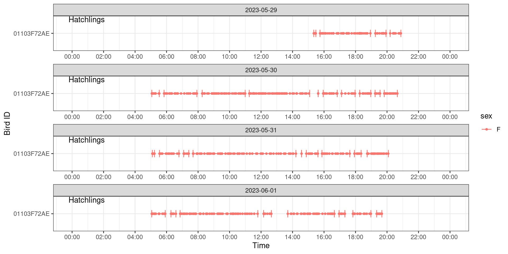
KC54
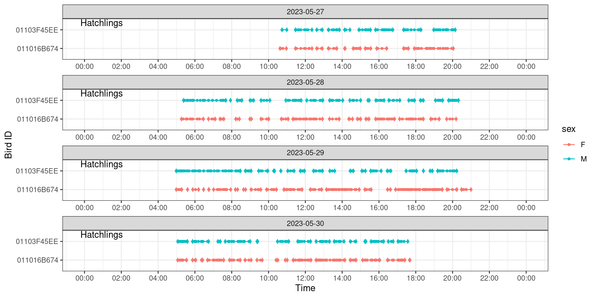
KC56
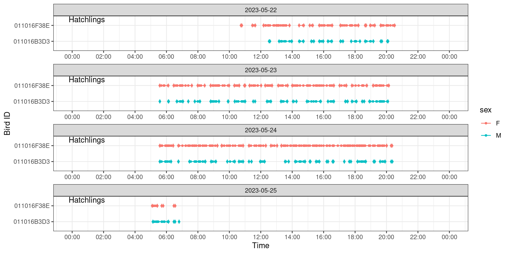
KC57
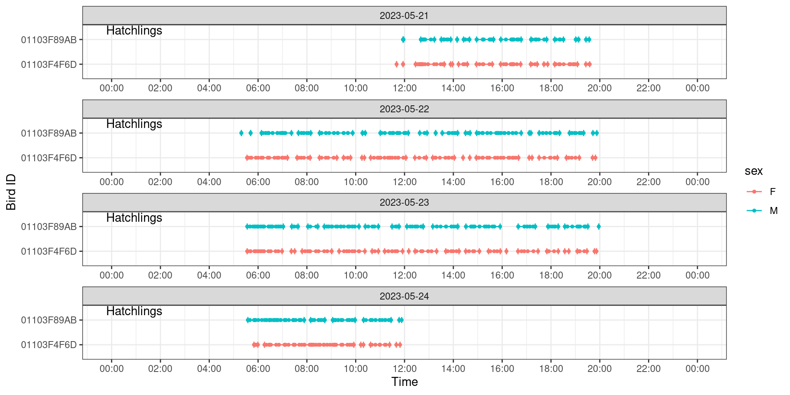
KC58
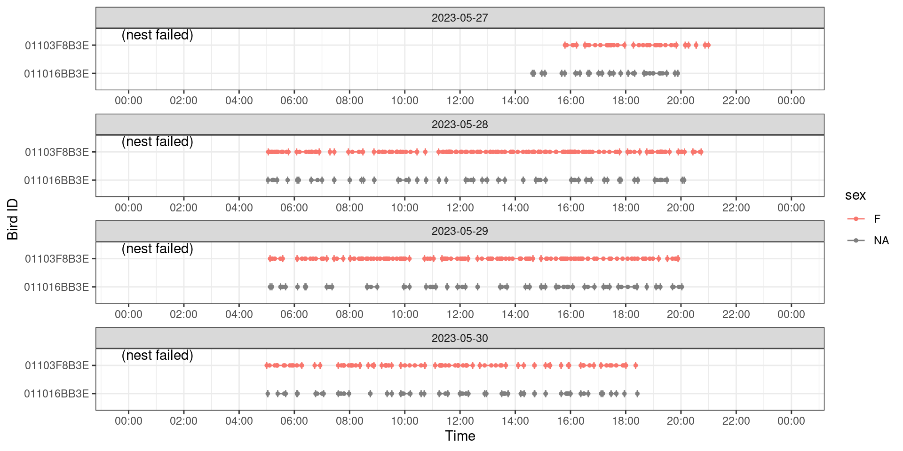
KC60
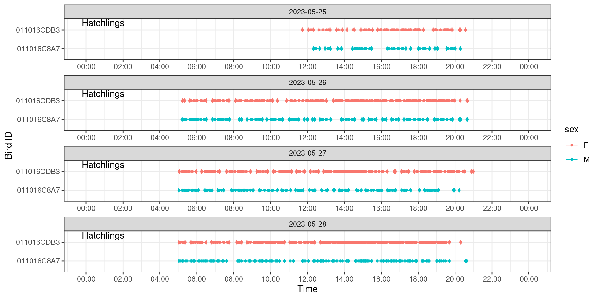
KC61
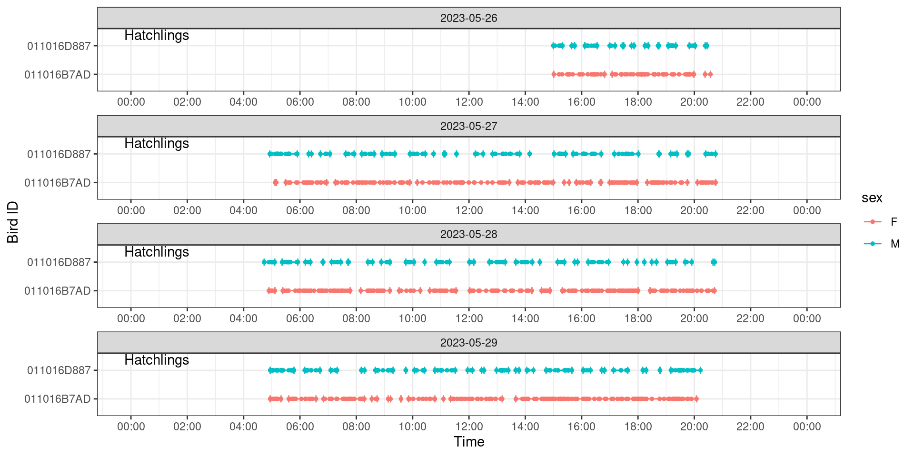
KC64
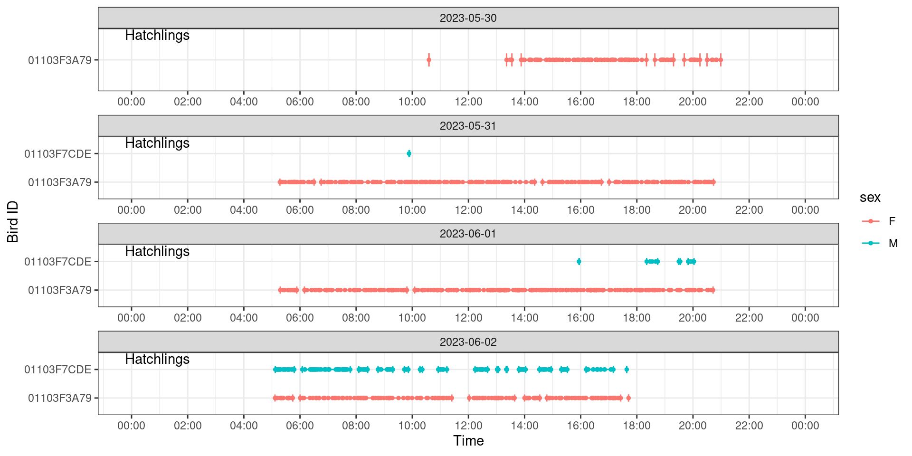
KC67
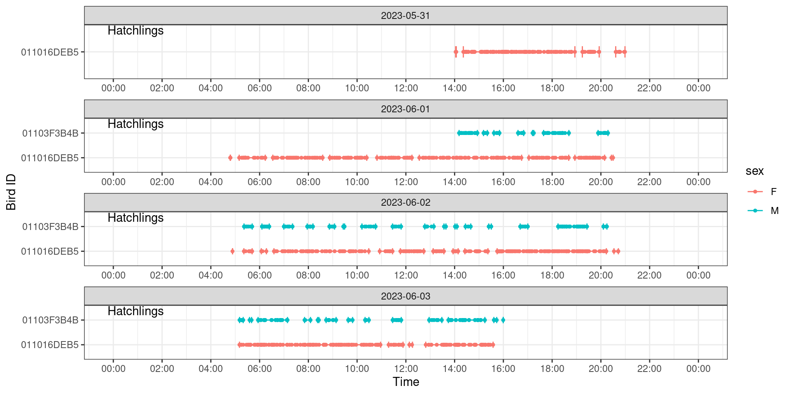
UR06
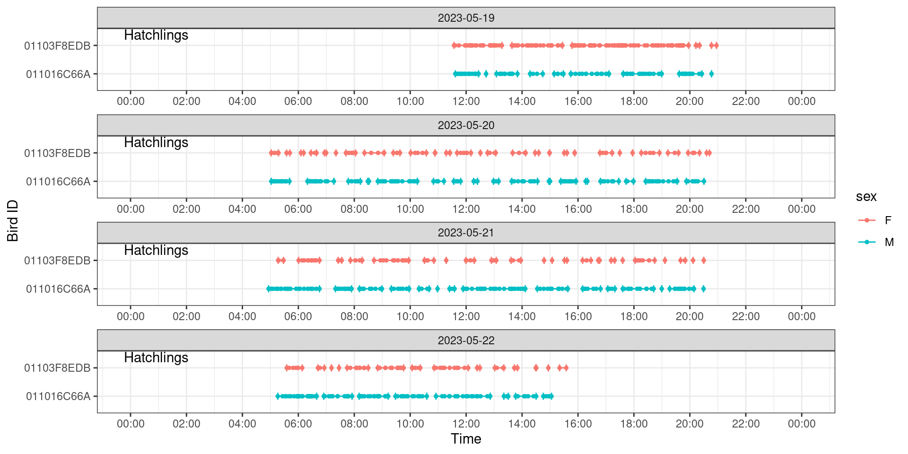
UR35
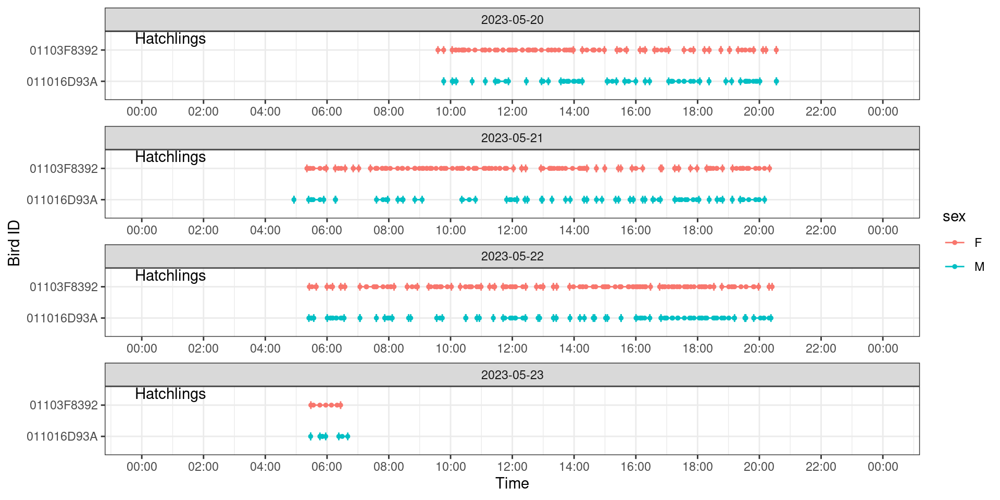
UR37
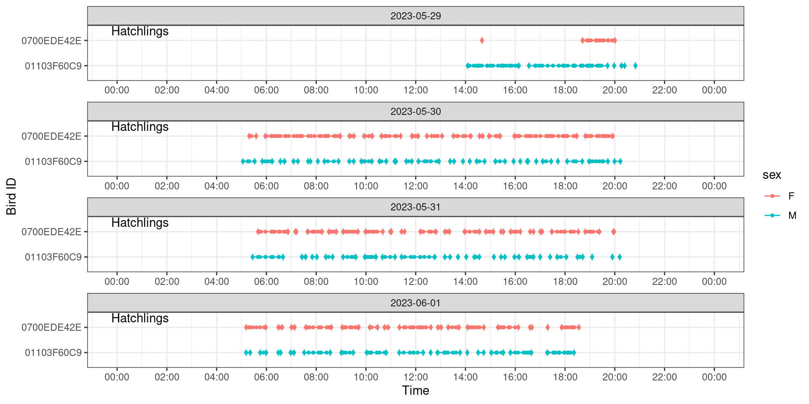
UR39
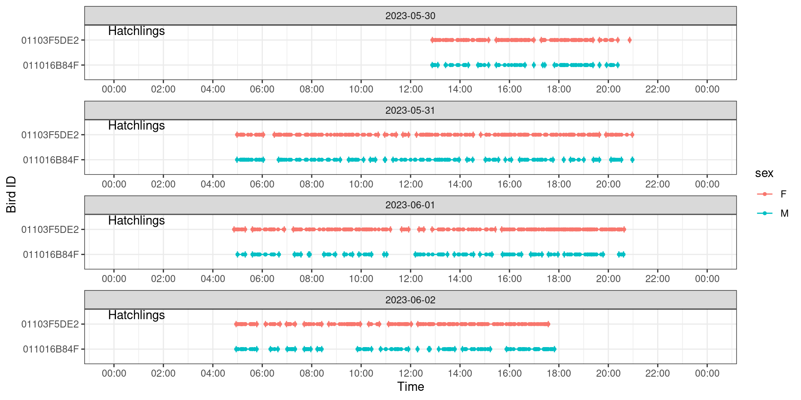
UR45

UR47
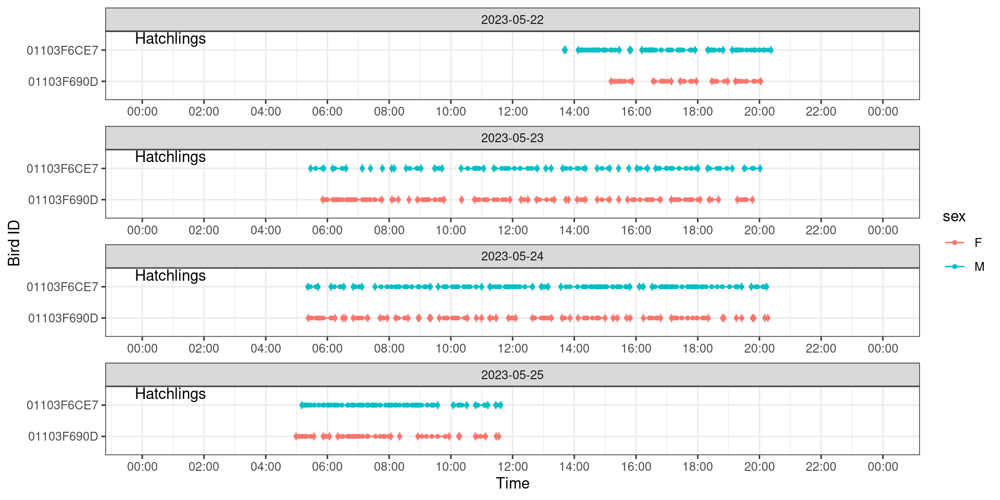
UR55
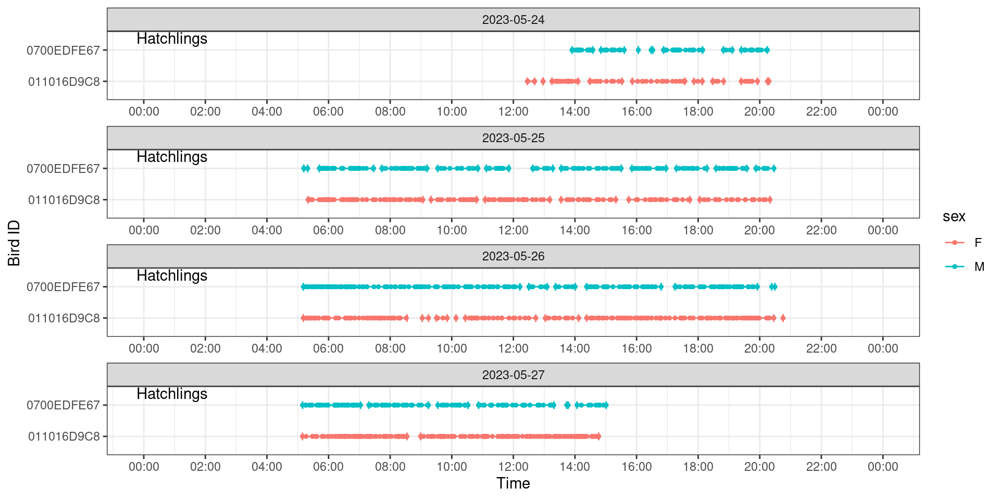
UR57
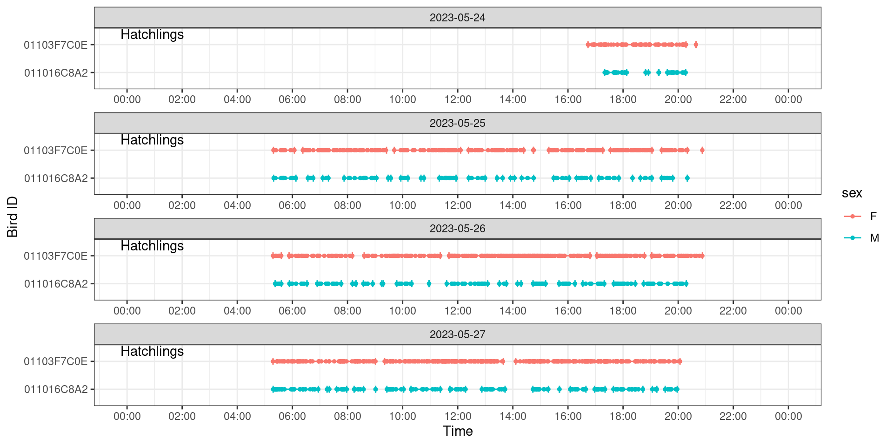
UR59
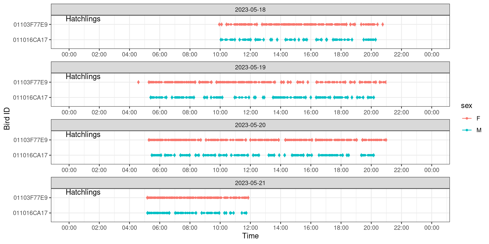
To Check
- What is the time in seconds between reads on your loggers? Is it 8s?
- Do you want to omit all birds who’s nests failed? Or only ones where it failed before the experiement? Do you know when this happened? Do any more data need to be filtered out?
Reproducibility
Packages
You probably only need to cite feedr and possibly the tidyverse, but you should keep track of the packages used and their versions (under General Info).
tidyverse
Wickham H, Averick M, Bryan J, Chang W, McGowan LD, François R, Grolemund G, Hayes A, Henry L, Hester J, Kuhn M, Pedersen TL, Miller E, Bache SM, Müller K, Ooms J, Robinson D, Seidel DP, Spinu V, Takahashi K, Vaughan D, Wilke C, Woo K, Yutani H (2019). “Welcome to the tidyverse.” Journal of Open Source Software, 4(43), 1686. doi:10.21105/joss.01686 https://doi.org/10.21105/joss.01686.
feedr
LaZerte SE, Reudink MW, Otter KA, Kusack J, Bailey JM, Woolverton A, Paetkau M, de Jong A, Hill DJ (2017). “feedr and animalnexus.ca: A paired R package and user-friendly Web application for transforming and visualizing animal movement data from static stations.” Ecology and Evolution, 7(19), 7884-7896. doi:10.1002/ece3.3240 https://doi.org/10.1002/ece3.3240.
General info
devtools::session_info()─ Session info ───────────────────────────────────────────────────────────────────────────────────
setting value
version R version 4.3.2 (2023-10-31)
os Ubuntu 22.04.3 LTS
system x86_64, linux-gnu
ui X11
language en_CA:en
collate en_CA.UTF-8
ctype en_CA.UTF-8
tz America/Winnipeg
date 2023-11-14
pandoc 3.1.1 @ /usr/lib/rstudio/resources/app/bin/quarto/bin/tools/ (via rmarkdown)
─ Packages ───────────────────────────────────────────────────────────────────────────────────────
package * version date (UTC) lib source
bit 4.0.5 2022-11-15 [1] CRAN (R 4.3.0)
bit64 4.0.5 2020-08-30 [1] CRAN (R 4.3.0)
cachem 1.0.8 2023-05-01 [1] CRAN (R 4.3.0)
callr 3.7.3 2022-11-02 [1] CRAN (R 4.3.0)
cli 3.6.1 2023-03-23 [1] CRAN (R 4.3.0)
colorspace 2.1-0 2023-01-23 [1] CRAN (R 4.3.0)
crayon 1.5.2 2022-09-29 [1] CRAN (R 4.3.0)
crosstalk 1.2.0 2021-11-04 [1] CRAN (R 4.3.0)
devtools 2.4.5 2022-10-11 [1] CRAN (R 4.3.0)
digest 0.6.33 2023-07-07 [1] CRAN (R 4.3.1)
dplyr * 1.1.3 2023-09-03 [1] CRAN (R 4.3.1)
ellipsis 0.3.2 2021-04-29 [1] CRAN (R 4.3.0)
evaluate 0.23 2023-11-01 [1] CRAN (R 4.3.1)
fansi 1.0.5 2023-10-08 [1] CRAN (R 4.3.1)
farver 2.1.1 2022-07-06 [1] CRAN (R 4.3.0)
fastmap 1.1.1 2023-02-24 [1] CRAN (R 4.3.0)
feedr * 0.11.0 2023-11-14 [1] local
forcats * 1.0.0 2023-01-29 [1] CRAN (R 4.3.0)
fs 1.6.3 2023-07-20 [1] CRAN (R 4.3.1)
generics 0.1.3 2022-07-05 [1] CRAN (R 4.3.0)
ggplot2 * 3.4.4 2023-10-12 [1] CRAN (R 4.3.1)
glue 1.6.2 2022-02-24 [1] CRAN (R 4.3.0)
gt * 0.10.0 2023-10-07 [1] CRAN (R 4.3.1)
gtable 0.3.4 2023-08-21 [1] CRAN (R 4.3.1)
hms 1.1.3 2023-03-21 [1] CRAN (R 4.3.0)
htmltools 0.5.7 2023-11-03 [1] CRAN (R 4.3.1)
htmlwidgets 1.6.2 2023-03-17 [1] CRAN (R 4.3.0)
httpuv 1.6.12 2023-10-23 [1] CRAN (R 4.3.1)
jsonlite 1.8.7 2023-06-29 [1] CRAN (R 4.3.1)
knitr 1.45 2023-10-30 [1] CRAN (R 4.3.1)
labeling 0.4.3 2023-08-29 [1] CRAN (R 4.3.1)
later 1.3.1 2023-05-02 [1] CRAN (R 4.3.1)
leaflet 2.2.0 2023-08-31 [1] CRAN (R 4.3.1)
lifecycle 1.0.3 2022-10-07 [1] CRAN (R 4.3.0)
lubridate * 1.9.3 2023-09-27 [1] CRAN (R 4.3.1)
magrittr 2.0.3 2022-03-30 [1] CRAN (R 4.3.0)
memoise 2.0.1 2021-11-26 [1] CRAN (R 4.3.0)
mime 0.12 2021-09-28 [1] CRAN (R 4.3.0)
miniUI 0.1.1.1 2018-05-18 [1] CRAN (R 4.3.0)
munsell 0.5.0 2018-06-12 [1] CRAN (R 4.3.0)
pillar 1.9.0 2023-03-22 [1] CRAN (R 4.3.0)
pkgbuild 1.4.2 2023-06-26 [1] CRAN (R 4.3.1)
pkgconfig 2.0.3 2019-09-22 [1] CRAN (R 4.3.0)
pkgload 1.3.3 2023-09-22 [1] CRAN (R 4.3.1)
prettyunits 1.2.0 2023-09-24 [1] CRAN (R 4.3.1)
processx 3.8.2 2023-06-30 [1] CRAN (R 4.3.1)
profvis 0.3.8 2023-05-02 [1] CRAN (R 4.3.1)
promises 1.2.1 2023-08-10 [1] CRAN (R 4.3.1)
ps 1.7.5 2023-04-18 [1] CRAN (R 4.3.0)
purrr * 1.0.2 2023-08-10 [1] CRAN (R 4.3.1)
R6 2.5.1 2021-08-19 [1] CRAN (R 4.3.0)
Rcpp 1.0.11 2023-07-06 [1] CRAN (R 4.3.1)
readr * 2.1.4 2023-02-10 [1] CRAN (R 4.3.0)
remotes 2.4.2.1 2023-07-18 [1] CRAN (R 4.3.1)
rlang 1.1.2 2023-11-04 [1] CRAN (R 4.3.1)
rmarkdown 2.25 2023-09-18 [1] CRAN (R 4.3.1)
rstudioapi 0.15.0 2023-07-07 [1] CRAN (R 4.3.1)
sass 0.4.7 2023-07-15 [1] CRAN (R 4.3.1)
scales 1.2.1 2022-08-20 [1] CRAN (R 4.3.0)
sessioninfo 1.2.2 2021-12-06 [1] CRAN (R 4.3.0)
shiny 1.7.5.1 2023-10-14 [1] CRAN (R 4.3.1)
stringi 1.7.12 2023-01-11 [1] CRAN (R 4.3.0)
stringr * 1.5.0 2022-12-02 [1] CRAN (R 4.3.0)
tibble * 3.2.1 2023-03-20 [1] CRAN (R 4.3.0)
tidyr * 1.3.0 2023-01-24 [1] CRAN (R 4.3.0)
tidyselect 1.2.0 2022-10-10 [1] CRAN (R 4.3.0)
tidyverse * 2.0.0 2023-02-22 [1] CRAN (R 4.3.0)
timechange 0.2.0 2023-01-11 [1] CRAN (R 4.3.0)
tzdb 0.4.0 2023-05-12 [1] CRAN (R 4.3.1)
urlchecker 1.0.1 2021-11-30 [1] CRAN (R 4.3.0)
usethis 2.2.2 2023-07-06 [1] CRAN (R 4.3.1)
utf8 1.2.4 2023-10-22 [1] CRAN (R 4.3.1)
vctrs 0.6.4 2023-10-12 [1] CRAN (R 4.3.1)
vroom 1.6.4 2023-10-02 [1] CRAN (R 4.3.1)
withr 2.5.2 2023-10-30 [1] CRAN (R 4.3.1)
xfun 0.41 2023-11-01 [1] CRAN (R 4.3.1)
xml2 1.3.5 2023-07-06 [1] CRAN (R 4.3.1)
xtable 1.8-4 2019-04-21 [1] CRAN (R 4.3.0)
yaml 2.3.7 2023-01-23 [1] CRAN (R 4.3.0)
[1] /home/steffi/R/x86_64-pc-linux-gnu-library/4.3
[2] /usr/local/lib/R/site-library
[3] /usr/lib/R/site-library
[4] /usr/lib/R/library
──────────────────────────────────────────────────────────────────────────────────────────────────